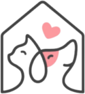

Aller au contenu

Pattoune chez soi
Pet sitter · Pau
Pourquoi moi
Garde de chien
Garde de chat
Zone
FAQ
Réserver
Oups, cette page s’est sauvée !
Elle a dû partir en promenade. Revenez à l’accueil pour retrouver toutes les Pattounes.
Retour à l’accueil